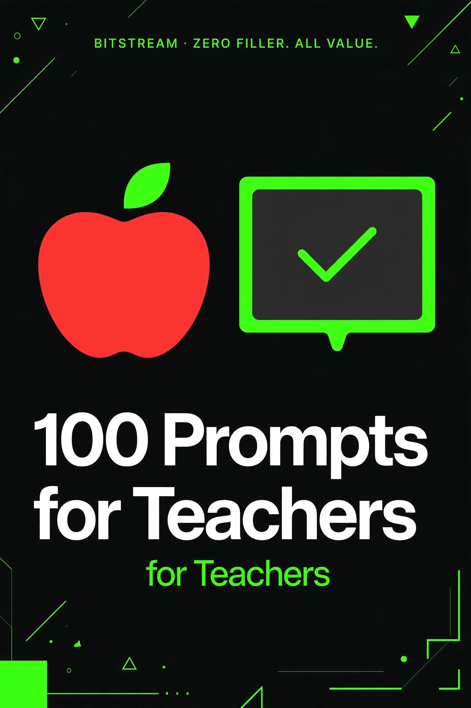

BITSTREAM · ZERO FILLER. ALL VALUE.
100 Prompts
for Teachers
100 copy-paste prompts for K-12 classrooms.
Open a free AI tool, paste, fill in the blanks, done.
ESSENTIAL PACK · $7.99
How to use this pack (60 seconds)
- Open a free AI tool — ChatGPT (chatgpt.com), Claude (claude.ai), or Gemini (gemini.google.com). No account tricks, no paid plan needed.
- Copy any prompt and replace the [BRACKETED] parts with your details.
- Be specific. Grade level, subject, class size, and your state standards — specifics in, quality out. "Write a lesson plan" gets a generic plan. "Write a 45-minute 4th-grade lesson on equivalent fractions aligned to Florida B.E.S.T. standards" gets a plan you can teach tomorrow.
- Treat the first answer as a draft. Reply with "make it shorter," "add more practice problems," or "make it work for my ELL students" until it's right.
- You're the expert. AI is a fast assistant, not a credentialed teacher. Check anything that touches student data, IEPs, or school policy before using it.
Rule 1 — Describe your classroom. Grade, subject, and who is in the room matter more than the prompt wording. "My 3rd-grade class has 26 students, 5 are English learners" gets you usable results.
Rule 2 — Never paste student names or IEPs into a public AI tool. Describe the need ("a 5th grader with a reading IEP at a 3rd-grade level") instead of the document. Follow your district's privacy rules.
Rule 3 — AI drafts, you decide. AI can write a quiz, a rubric, or a parent email — but you sign it. Skim everything before it reaches a student or a parent.
1 · Lesson Plans & Unit Design
Plans built around your standards, your period length, and your actual students.
PROMPT 01
Standard-aligned lesson plan
Write a [45-minute] lesson plan for [4th grade] on [equivalent fractions] aligned to [Florida B.E.S.T. standards]. Include: objective in student-friendly language, materials, a 5-minute hook, direct instruction, guided practice, independent practice, and a 3-minute exit ticket.
PROMPT 02
5-day unit planner
Build a 5-day unit for [7th-grade science] on [the water cycle]. For each day: the day's focus, one hands-on activity using [common classroom supplies], and how you'll check understanding. End the week with a project, not a test.
PROMPT 03
Warm-up and bell ringers
Give me 10 bell-ringer prompts for [8th-grade U.S. history] that take under 5 minutes, review last week's material on [the Civil War], and work as discussion starters or quick writes.
PROMPT 04
Backwards design a unit
Using backwards design, plan a [3-week] unit for [10th-grade English] on [persuasive writing]. Start with the final assessment: [a 500-word persuasive essay]. Then map the skills students need each week and one check per week to prove they're ready.
PROMPT 05
Lesson for a short class period
I only have [30 minutes] with [my 2nd-graders] tomorrow to teach [telling time to the half hour]. Give me a tight lesson: a 5-minute intro, one hands-on activity with [play clocks], and a quick exit slip. Nothing extra.
PROMPT 06
Cross-curricular lesson
Combine [math] and [art] for [5th graders] into one 50-minute lesson on [symmetry]. Students should practice [identifying lines of symmetry] while creating something they can take home.
PROMPT 07
Project-based learning plan
Design a 2-week project for [6th-grade social studies] where students [plan a mock town council] to learn [civics and local government]. Include milestones, roles for groups of 4, and how I'll grade both the process and the final product.
PROMPT 08
Lesson pacing check
Here's my lesson plan for [fractions]: [paste your plan]. I have [50 minutes]. Tell me where I'm likely to run out of time, what to cut or compress, and where to add a checkpoint so I know whether to slow down.
PROMPT 09
Hook and attention grabbers
Give me 5 ways to open a lesson on [photosynthesis] for [9th-grade biology] that will grab their attention in the first 60 seconds — one surprising fact, one demo, one question, one short story, one visual.
PROMPT 10
Adapt a lesson for a block schedule
I have a lesson designed for a [45-minute] period on [the Pythagorean theorem] for [8th grade]. Convert it to a [90-minute] block: add one deeper activity, one collaborative task, and one review segment. Here's the original: [paste it].
PROMPT 11
Unit review day that isn't boring
Design a 45-minute review day for [3rd grade] before a test on [multiplication facts]. No worksheets: one game, one team competition, one movement activity, and one 5-minute self-check so kids know what to study tonight.
PROMPT 12
First-day-of-school plan
Write a first-day plan for [my 7th-grade ELA class]. I want: a welcome activity that helps me learn names, clear behavior expectations framed positively, and one low-pressure icebreaker. No syllabus reading aloud.
2 · Differentiation & Special Populations
Every class has a range — ELL, IEP, gifted, and everyone in between. Same lesson, three doors in.
PROMPT 13
Three-level version of one lesson
Take this lesson on [main idea and details] for [3rd grade] and create three versions: below grade level, on grade level, and advanced. Keep the same learning goal for all three. Here's my lesson: [paste it].
PROMPT 14
ELL vocabulary scaffolding
I have [4 English learners at the beginner level] in my [6th-grade science] class. For our unit on [ecosystems], give me: a picture word bank of 15 key terms, simple definitions, and 5 sentence frames they can use in discussions.
PROMPT 15
IEP-friendly reading passage
Rewrite this reading passage at a [3rd-grade] reading level, keeping the same facts and key vocabulary, for a [5th-grade] student with a reading IEP. Keep it about the same length. Here's the passage: [paste it].
PROMPT 16
Gifted extension tasks
My [7th-grade] class is finishing a unit on [the American Revolution]. Give me 4 extension tasks for my gifted students who finished early — real research, creative output, or debate, not just more worksheets.
PROMPT 17
Choice board builder
Build a 3x3 choice board for [4th grade] on [habitats]. Each square is a different way to show learning: write, draw, build, perform, research, teach. Every option must assess the same skill: [comparing two habitats].
PROMPT 18
Text at two reading levels
Give me the same explanation of [how bills become laws] written two ways: one at a [5th-grade] reading level and one at a [2nd-grade] reading level. Same facts, simpler words in version two.
PROMPT 19
Scaffolded math word problems
Write 8 word problems about [two-step equations] for [7th grade], in a difficulty ladder: the first 3 solvable in one way, the next 3 slightly harder, the last 2 challenging. Include the answer and one hint per problem.
PROMPT 20
504 and accommodation ideas
Brainstorm classroom-friendly ways to support a student who needs [extended time, chunked instructions, and reduced copying] in [4th-grade math]. I need practical moves I can use every day, not a policy lecture.
PROMPT 21
Visual supports for a new topic
I'm introducing [long division] to [4th grade]. Create: a 5-step visual anchor chart I can describe and draw, 3 worked examples with each step labeled, and 5 "what goes wrong" examples showing the common mistakes.
PROMPT 22
Translate directions for ELL families
Simplify these assignment directions so a parent who reads English at a beginner level can help their child. Short sentences, no idioms, numbered steps. Here's the assignment: [paste it].
PROMPT 23
Small-group rotation plan
I have [24 students] in [2nd grade] and want 3 reading rotations of [20 minutes] each. Group my students by need: one group on [phonics], one on [fluency], one on [comprehension]. Give me one activity per group plus what the other two groups do independently.
PROMPT 24
Make it hands-on for wiggly learners
Convert this worksheet-based lesson on [parts of speech] for [3rd grade] into a movement-based lesson. Students need to MOVE — sort, act, build, or play their way through the same content. Here's the worksheet: [paste it].
PROMPT 25
Early finisher menu
Give me a menu of 10 early-finisher activities for [5th-grade ELA] that are self-directed, silent, and actually educational — not busywork. Things like vocabulary games, reading challenges, and creative writing prompts.
3 · Quizzes, Worksheets & Assessments
Fresh questions in minutes — exit tickets to full tests, with answer keys.
PROMPT 26
Quick 10-question quiz
Write a 10-question quiz for [8th-grade math] on [solving linear equations]: 6 multiple choice, 4 short answer. Include an answer key with one-line explanations for each.
PROMPT 27
Exit ticket generator
Write 5 exit-ticket questions for today's [5th-grade] lesson on [the solar system]. One recall, one true/false, one draw-and-label, one "explain in your own words," and one preview of tomorrow's topic.
PROMPT 28
Word search and vocab practice
Create a vocabulary practice set for [4th-grade science] on [states of matter]: 12 terms with kid-friendly definitions, a word bank, and 8 fill-in-the-blank sentences using the terms. No word search — real practice.
PROMPT 29
Multiple-choice with good distractors
Write 8 multiple-choice questions for [10th-grade chemistry] on [balancing equations]. Make the wrong answers reflect the actual mistakes students make (like forgetting to multiply subscripts), and explain after the key why each distractor is tempting.
PROMPT 30
Comprehension check questions
Write 10 questions for [6th grade] after reading ["Hatchet," chapters 1-5]: 4 literal (right there in the text), 3 inferential, 2 evaluative, and 1 personal connection. Include a short answer key.
PROMPT 31
Spelling test builder
Build a spelling test for [3rd grade] using these [15] words: [list your words]. Give me: the word list in test order, one practice sentence per word, and a simple 3-column practice sheet format (say, spell, check).
PROMPT 32
Math problem set with answer key
Create a 20-problem homework set for [2nd grade] on [adding two-digit numbers]. Start easy, get gradually harder, include 4 word problems, and give me the full answer key.
PROMPT 33
Make a test from my standards
Build a 25-question unit test for [7th-grade social studies] on [ancient Egypt] covering these standards: [list them]. Mix of multiple choice, matching, and 2 short-answer. Tell me which standard each question covers.
PROMPT 34
Formative check, five ways
Give me 5 different quick formative assessments for [9th-grade algebra] on [graphing lines] that take under 5 minutes each: one thumb-o-meter prompt, one whiteboard task, one poll question, one "fix the mistake" problem, and one peer-explain task.
PROMPT 35
Test retake version
My [6th-grade] test on [ratios] had these questions: [paste them]. Write a retake version that tests the same skills at the same difficulty but with different numbers, contexts, and question order. Include the answer key.
PROMPT 36
Open-ended questions that make them think
Write 6 open-ended questions for [8th-grade science] on [genetics] that can't be answered by copying the textbook — they need to apply, compare, or predict. Include sample strong answers so I can grade fairly.
PROMPT 37
Listening or speaking assessment
Design a 10-minute speaking assessment for [my Spanish 1 students] on [describing their family]. Include: the prompt I'll give students, what I'm listening for (list 5 criteria), and a simple 1-4 scoring guide.
PROMPT 38
Data-driven reteach plan
Here's how my [4th-grade] class did on the [fractions] quiz, question by question: [paste scores or list which questions most missed]. Tell me which skills need reteaching, group the misses by skill, and give me a 2-day reteach plan.
4 · Rubrics & Grading Shortcuts
Grade faster and fairer — clear rubrics, feedback banks, and comments that write themselves.
PROMPT 39
Rubric for a writing assignment
Build a 4-level rubric (Excellent, Good, Developing, Beginning) for a [5th-grade] [persuasive paragraph]. Criteria: [claim, evidence, organization, conventions]. Write each cell in language a 5th grader can understand.
PROMPT 40
Single-point rubric
Create a single-point rubric for a [9th-grade] [lab report on pendulums]: one column describing "meets standard," with space for "strengths" and "needs work." Keep it to one page so grading takes under 5 minutes per paper.
PROMPT 41
Project rubric students understand
Write a kid-friendly rubric for a [3rd-grade] [diorama of a habitat] project. 4 levels with simple words, pictures described for each level if possible, and a points total of [20].
PROMPT 42
Feedback comment bank
Give me 20 feedback comments I can paste on [7th-grade] [essay drafts]: 5 for strong thesis, 5 for weak evidence, 5 for organization problems, 5 for grammar. Each comment should say what's wrong AND one specific next step.
PROMPT 43
Grade this against my rubric
Grade this student work against my rubric and tell me the score for each criterion plus one sentence of justification. Then suggest 2 specific things the student should fix on revision. Rubric: [paste it]. Student work: [paste it, no name attached].
PROMPT 44
Checklist for a performance task
Turn this assignment — [a 5-minute oral presentation on a book of their choice for 8th-grade ELA] — into a student self-check checklist they fill out BEFORE presenting. Yes/no items only, covering content, delivery, and time.
PROMPT 45
Participation grading system
Design a simple weekly participation system for [my high school] [discussion-based history class]: what counts as participation (not just talking), how I'll track it for [30 students], and how it converts to a grade fairly.
PROMPT 46
Peer review guide
Write a peer review guide for [6th-grade] [narrative writing] so students give each other useful feedback. Include: 3 things to compliment, 3 questions to ask, sentence starters, and one rule: no feedback on handwriting or spelling.
PROMPT 47
Make my assignment clearer
Here's my assignment sheet for [a 4th-grade science fair project]: [paste it]. Rewrite the directions so a 4th grader can follow them alone, add a timeline with weekly checkpoints, and list exactly what gets turned in.
PROMPT 48
Late work policy that works
Help me write a late-work policy for [my 8th-grade class] that is firm but fair: how many days, what penalty, what exceptions. Then write the one-paragraph version I can put in my syllabus and the one-sentence version for parents.
5 · Parent Communication
Emails that build bridges — progress updates, tough conversations, and the good-news calls parents never forget.
PROMPT 49
Positive note home
Write a positive note to the parents of [a 3rd grader] who [went from refusing to read aloud to volunteering twice this week]. Warm, specific, under 100 words — the kind of note a parent saves on the fridge.
PROMPT 50
Gentle academic concern email
Write an email to the parents of [a 6th grader] about [falling math grades — missing 4 of the last 6 assignments]. Concerned but not alarming. Include: what I'm seeing, what I'm already doing in class, and 2 specific things they can do at home.
PROMPT 51
Behavior concern without blame
Write an email to a parent about [their 4th grader talking over classmates during lessons]. Describe the behavior factually, explain how it affects learning, propose one plan we try together, and end by inviting their input.
PROMPT 52
Progress update mid-quarter
Write a mid-quarter progress email template for [7th-grade ELA] with fill-in spots for: current grade, one strength, one area to work on, and one question for the parent. Professional, readable on a phone.
PROMPT 53
Request a parent conference
Write an email requesting a parent-teacher conference about [a 2nd grader's reading progress]. Keep it positive in tone, offer [3 time slots next week], say it will take [20 minutes], and reassure them this is about partnering, not punishing.
PROMPT 54
Welcome email to new families
Write my beginning-of-year welcome email for [my 5th-grade class]: who I am, what we're learning this year, how homework works, the best way to reach me, and one fun thing about our classroom.
PROMPT 55
Newsy classroom newsletter
Draft a one-page classroom newsletter for [October] in [1st grade]: what we learned, what's coming up, 2 ways to help at home, and one photo-caption spot. Friendly tone, skimmable.
PROMPT 56
Missing work nudge
Write a short email to the parent of [an 8th grader] listing [3 missing assignments] and the new deadline of [Friday]. Firm but supportive — assume the family wants to help and just didn't know.
PROMPT 57
Apology email to a parent
I made a mistake: [I sent a low grade notice to the wrong family]. Write a sincere, brief apology email. Own it, say what I did to fix it, and keep it professional.
PROMPT 58
Field trip permission request
Write a permission-slip cover letter for [our 4th-grade trip to the science museum on November 14]: the learning goal, cost of [$12], what to bring, chaperone request, and the return-by date of [November 7]. Clear enough that no parent has questions.
PROMPT 59
Respond to an upset parent
A parent emailed me upset about [their child's grade on the book report]. The tone is heated. Write a calm, professional reply that: acknowledges their concern, explains how the grade was earned without getting defensive, and invites a phone call.
PROMPT 60
End-of-year thank you
Write an end-of-year thank-you note from me to my [2nd-grade] class families: what the class accomplished, one specific memory prompt I can personalize per student, and a warm goodbye.
6 · Classroom Management & Substitute Plans
Routines that run themselves, plans that survive your absence, and calm when things get loud.
PROMPT 61
Morning routine for little ones
Design a morning routine for [kindergarten] that runs [20 minutes] with minimal talking from me: arrival jobs, a visual schedule, and a calm-down corner procedure. Include exactly what I say on day one to teach it.
PROMPT 62
Attention-getters that work
Give me 12 call-and-response attention-getters for [3rd grade]: ones I can teach on day one, organized from calm to silly. Include the exact words I say and what the class says back.
PROMPT 63
Behavior plan for a chatty class
My [6th-grade] class talks over me during transitions. Give me a 2-week reset plan: a class meeting script, one incentive system, one consequence ladder, and how to handle the [3 students] who test it hardest.
PROMPT 64
Seating chart strategy
Help me design a seating plan for [28 students] in [7th-grade math] in [rows of 4]. Here are my constraints: [list: who can't sit together, who needs the front, any ELL pairings]. Give me the arrangement and the reasoning.
PROMPT 65
Calm-down corner scripts
Write scripts for my [2nd-grade] calm-down corner: what I say when I send a student there, 3 breathing or counting exercises posted on the wall, and what I say when they rejoin the group. Gentle, never punitive.
PROMPT 66
Full-day sub plan
Write a complete one-day substitute plan for [my 4th-grade class]: morning routine details, where everything is (describe the spots I'll fill in), [3] self-contained activities with full instructions, bathroom and lunch procedures, and a note template the sub leaves me at day's end.
PROMPT 67
Emergency sub folder contents
List everything that should go in my emergency sub folder for [8th-grade science]: class lists, schedules, and [5] no-prep activities that keep 30 eighth graders productively busy for a full period each.
PROMPT 68
Sub-proof activity: no tech needed
Design a no-tech, no-prep activity for a substitute in [5th-grade ELA] that fills [45 minutes], reviews [story elements], and produces something the sub can collect and I can actually grade. Full step-by-step for a sub who's never met my class.
PROMPT 69
Reward system that doesn't cost money
Design a free classroom reward system for [4th grade]: how students earn points, what the rewards are (privileges, not stuff), how I track it in under 2 minutes a day, and how to reset it monthly so it stays fresh.
PROMPT 70
Conflict resolution lesson
Write a [30-minute] lesson for [3rd grade] teaching conflict resolution: a read-aloud scenario, an "I feel" sentence frame, and 3 role-play situations students act out in pairs. Calm, practical, no preachiness.
PROMPT 71
Transition routines
My [1st-grade] class falls apart during transitions. Give me 5 transition routines: cleanup to carpet, carpet to desks, lining up, coming back from recess, and packing up. Include the exact words and signals for each.
PROMPT 72
After-school detention alternative
Help me design a restorative alternative to detention for [7th grade]: a reflection sheet with [4 questions], a short repair task, and a re-entry conversation script. The goal is changed behavior, not just punishment.
7 · Reading Groups, Projects & Enrichment
Book discussions that spark, projects kids remember, and classroom displays worth the wall space.
PROMPT 73
Guided reading questions
Write 8 guided reading questions for ["Charlotte's Web," chapters 6-10] for [3rd grade]: 3 vocabulary, 3 comprehension, 2 prediction or opinion. Include the page numbers I'd note for each.
PROMPT 74
Book club discussion plan
Plan a 30-minute book club meeting for [6th grade] on [the first 100 pages of "Wonder"]: an opening question, 5 discussion questions that go deeper than plot, one activity, and a closing reflection prompt.
PROMPT 75
Literature circle roles
Create literature circle role cards for [5th grade]: Discussion Director, Word Wizard, Connector, Illustrator. For each role: what they do, 3 sentence starters, and what they bring to the meeting.
PROMPT 76
Bulletin board concept
Give me 5 bulletin board concepts for [fall] in [my 2nd-grade hallway] that show student work, teach something, and take under an hour to put up. Include the title, what goes on it, and one line of border/trim advice.
PROMPT 77
Science fair project ideas
Brainstorm 15 science fair project ideas for [5th grade] that cost under [$10], can be done at home, and test one variable. For each: the question, the simple procedure, and what the student measures.
PROMPT 78
History project with choices
Design a project for [8th grade] on [the Civil Rights Movement] with 4 format choices (documentary script, museum exhibit, podcast episode, timeline website). Same learning goal for all four, a 2-week timeline, and grading criteria.
PROMPT 79
Field trip learning plan
We're taking [3rd grade] to [the aquarium]. Give me: 3 learning goals, a pre-visit lesson ([20 min]), a scavenger hunt worksheet with [10 items], and a post-visit reflection activity.
PROMPT 80
Class play or skit
Write a 10-minute class skit for [4th grade] about [the first Thanksgiving from multiple perspectives] with [25] speaking parts so every student has lines. Keep vocabulary grade-appropriate and the message balanced.
PROMPT 81
Genius hour launch
Plan a 6-week Genius Hour for [my 7th-grade class]: the pitch day format, a proposal template students fill out, 4 milestone check-ins, and how final presentations work. Include 10 example project ideas to spark them.
PROMPT 82
Morning meeting ideas
Give me 20 morning meeting ideas for [kindergarten]: greeting, share, and activity combos that take [15 minutes] total. Mix silly, kind, and skill-building. Nothing that needs supplies I don't have.
PROMPT 83
Classroom library book list
Recommend 25 books for my [4th-grade] classroom library: mix of genres, reading levels [2nd-6th], diverse characters, and at least 5 graphic novels. One sentence per book on why kids will like it.
PROMPT 84
End-of-unit celebration
Plan a 45-minute celebration for [2nd grade] after finishing our unit on [the ocean]: one craft, one game, one snack idea under [$20] for the whole class, and a 5-minute share-out so it still feels like learning.
8 · Report Cards & Professional Growth
Report-card comments that sound like you know each kid — and a growth plan for the teacher in the mirror.
PROMPT 85
Report card comment bank
Write 30 report-card comments for [3rd grade]: 10 for strong students, 10 for average, 10 for struggling. Each 2 sentences: one strength, one next step. Professional tone, no jargon.
PROMPT 86
Personalize one comment
Write a report-card comment for [a quiet 5th grader] who [writes beautiful stories but rarely participates in class]. Celebrate the writing, gently name participation as the growth area, and suggest one concrete goal for next quarter.
PROMPT 87
Honest but kind comment for a tough case
Write a report-card comment for [a 7th grader] who [is capable but turned in half the work this quarter]. Honest about the pattern, warm about the potential, and one specific plan — no sugarcoating, no shaming.
PROMPT 88
Specials-teacher comments
I teach [art] and write comments for [400 students]. Give me 15 short, warm comments I can mix and match by skill level: effort, creativity, technique. Under 25 words each.
PROMPT 89
Kindergarten narrative comments
Write 10 narrative report-card comments for [kindergarten] covering: social skills, fine motor, letter sounds, and independence. Sweet and specific — the kind parents read twice.
PROMPT 90
IEP progress report language
Help me write progress-report language for an IEP goal: [the student will read grade-level text with 80% accuracy]. Give me sentence frames for: making progress, met the goal, and not yet making progress — factual and parent-friendly.
PROMPT 91
Student self-assessment form
Create a student self-assessment for [4th grade] to complete before report cards: 5 questions in kid language about effort, behavior, and learning, plus one goal for next quarter. Something I can actually use in conferences.
PROMPT 92
PD goal for the year
Help me write a professional development goal for this year. My focus area: [using formative assessment better]. Make it specific and measurable, with 3 action steps and how I'll know it worked.
PROMPT 93
Observation lesson plan
My principal is observing my [6th-grade math] class next week during [our unit on ratios]. Help me plan a 45-minute lesson that shows: clear objectives, student engagement, differentiation, and a strong closure. Include 3 questions I'll ask and who I'll call on.
PROMPT 94
Reflect after a rough day
Today was rough: [my 5th-period class was chaos and my lesson fell apart]. Ask me 5 reflective questions — one at a time — about what happened, what was in my control, and what I'll try tomorrow. Coach me, don't lecture me.
PROMPT 95
Letter of recommendation template
Write a letter-of-recommendation template for [an 8th grader applying to a magnet high school] with blanks for: the student's strengths, one specific story, and character. Warm, credible, under one page.
PROMPT 96
Summer learning plan for students
Create a summer learning plan I can send home to [2nd-grade] families: 20 minutes a day, no worksheets to buy, using [the public library and free apps]. Reading, math, and one fun weekly challenge.
PROMPT 97
Classroom budget stretch
I have [$150] of classroom money for the year for [my 1st-grade class]. Give me a spending plan: what to buy first, what to get free or donated, and 10 free resources teachers actually use.
PROMPT 98
Grant application draft
Help me draft a [$500] classroom grant application for [DonorsChoose] to fund [a classroom library refresh for 4th grade]. Include: the need, what I'll buy, how students benefit, and a thank-you plan.
PROMPT 99
Teacher bio for the school website
Write a friendly teacher bio for the school website. About me: [I teach 3rd grade, this is my 6th year, I love read-alouds and my class pet is a bearded dragon named Biscuit]. Warm, professional, 150 words.
PROMPT 100
End-of-year reflection ritual
It's the last week of school. Ask me 7 questions — one at a time — about my year: my proudest moment, my hardest week, one student who changed, what I'd do differently, and what I'm taking into next year. Then write me a one-paragraph letter to future me.
That's the pack. Now go reclaim your evenings.
These 100 prompts were built for real K-12 classrooms — lesson plans, quizzes, rubrics, parent emails, and sub plans that save you hours every week. Zero filler, all value.
Want more? New prompts drop with new episodes. Join the deals list at icyunvbankai.github.io/Bitstream and you'll never miss one.
© 2026 Bitstream. This pack is for your personal use — share the show, not the file. Prompts are starting points: always verify facts, keep student information private, and check school policy before use.